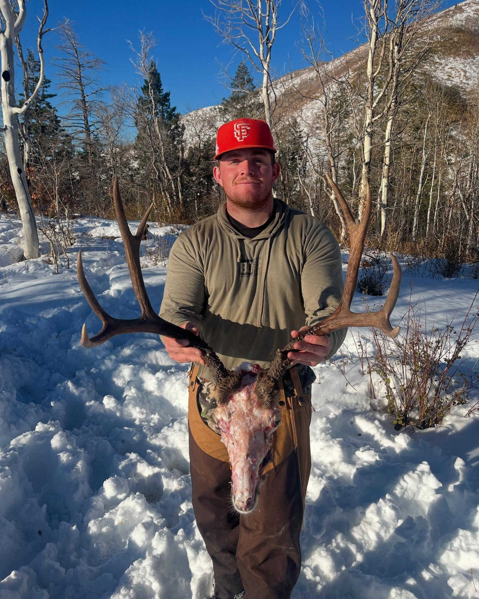

Episode 32 · February 08, 2025 · 4607
(EP:32) Hunter Rasmussen's Hunting Accident Story And Lessons Learned

About This Episode
In this episode we sit down with Hunter Rasmussen and he recounts his hunting accident story to us. Hopefully, through this podcast we can all walk away learning something a little more about safety and gun handling
Questions about the training topics in this episode? Tyce works with bird dog owners and hunters through Utah Bird Dog Training. Reach out to work with him directly.
Resources & Links
- Kuranda Dog Beds — Elevated, chew-proof dog beds.
- Utah Bird Dog Training — Tyce's professional training services.
Transcript
Full transcript for Episode 32: (EP:32) Hunter Rasmussen's Hunting Accident Story And Lessons Learned.
Tyce
Hey everyone, welcome to the Bird Dog Podcast. Today I've got Hunter Rasmussen on the show, along with Josh, who is one of the trainers on our team. Hunter is 21 years old and has one leg — he lost his left leg below the knee in a hunting accident on November 22nd, 2023. Three months after returning from a two-year mission in Arizona. Hunter, welcome to the show.
Hunter
Thanks Tyce, glad to be here.
Tyce
Walk us through what happened.
Hunter
My cousin Ryze and I went duck hunting at Schofield Reservoir up in Spanish Fork Canyon. It was a cold morning — zero degrees at first light. We'd had a good shoot, got within one bird of limiting out, and decided to relocate to check another spot where ducks had been flying. To get there you walk up a hill and cross an old fence that runs through the water. Ryze was behind me about 15 to 20 yards. He went to check if his gun was on safety — it was a Mossberg 870, safety on top of the stock. We still don't know exactly what happened — maybe his glove or a branch caught the trigger. The gun went off. I dropped immediately. Everything from mid-shin down went numb.
I stood up anyway. I knew we had no cell service where we were standing — you had to get to a certain spot on the hill to get signal. That was about 30 yards above me. So I started hobbling up the hill. Ryze could see blood coming through my waders from behind. He caught up to me, took off his shirt, found a stick, and made a tourniquet on my thigh. That tourniquet saved my life.
Tyce
What were you feeling in that moment?
Hunter
Adrenaline. I wasn't really feeling pain, I was just focused on getting to where I could make a call. We called the police and lost the signal three times. Called my mom — she was unusually calm, which was a miracle. She got my dad on the line, he knew exactly where we were, and he called Carbon County Sheriff and gave them our location. First responders arrived about 30 minutes later, life flight was there about 15 minutes after that. I was on the ground for roughly 45 minutes.
I never passed out, but there were moments where I wanted to close my eyes. I had a clear thought that if I closed my eyes it might be the last time. So I kept looking at the sun. Just doing whatever I could to stay awake. They carried me out on a tarp, got me in the helicopter, straight into emergency surgery.
Tyce
How long before the word "amputation" came up?
Hunter
About ten days to two weeks. I didn't hear that word for a while. The shot pattern — it was a modified choke at 15 to 20 yards, so the pattern was tight — hit behind my kneecap and the top of my calf. The leg was intact. From the outside it looked like a bunch of black holes. You wouldn't look at it and immediately think this guy is going to lose his leg. But all the nerves had been severed. The vascular damage was too severe to save the limb. They eventually amputated below the knee. I was in the hospital for a while. I'm doing well now.
Tyce
What do you want hunters to take away from this?
Hunter
Safety on, always. Finger off the trigger. Know where your muzzle is pointing at every moment — especially when you're climbing, stepping over obstacles, crossing fences, moving through thick cover. The terrain had us focused on getting to the next spot, and that's exactly when people get comfortable and make mistakes. I'm not mad at my cousin. That's not where I am at all. It was an accident. But it was a preventable one. Treat every gun as if it's loaded, every step of the way. Don't assume the safety is on — know it's on. Don't assume your glove won't catch the trigger — keep your finger away from it. In cold weather especially, with heavy mittens, this stuff happens. It happened to us.
Tyce
Hunter, I really appreciate you coming on and sharing this. You're hunting again, still have your dogs, and you've got a good perspective on the whole thing. It's a story worth telling and worth hearing.
Hunter
I love this sport. It's in my blood — my parents literally named me Hunter. I'm not done. I'll be out there. I just want people to be safe so they can be out there too. Thanks for having me.
About the Host
Tyce Erickson
Tyce Erickson is a professional bird dog trainer and the owner of Utah Bird Dog Training in Utah. For nearly two decades he has worked with pointing dogs, retrievers, and family hunting dogs — helping owners build dogs that are capable and enjoyable in the field. The Bird Dog Podcast is an extension of that work: honest conversations on training, hunting, breeding, and everything that goes into a life spent working dogs.
More About Tyce